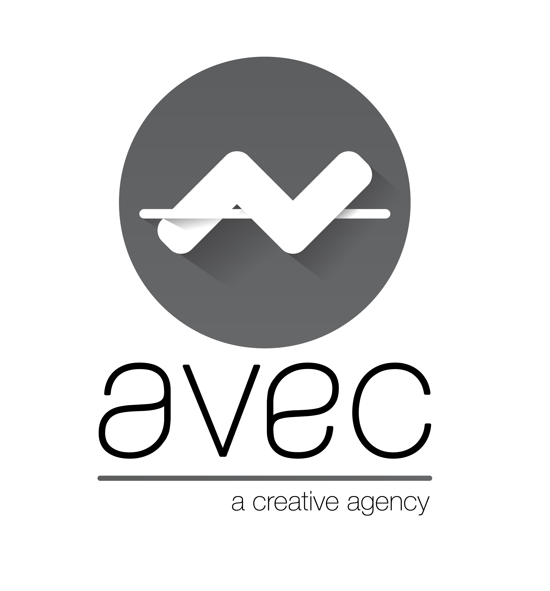

Oeuvres ayant été utilisées dans l’application Toddle:
- Piet Mondrian - New York City
- Franck Stella - Mas o menos
- François Morellet - 4 doubles trames, traits minces ( 0° - 22°5 - 45° - 67°5)
- François Morellet - Du jaune au violet
- Yves Klein - IKB3 monochrome bleu

Une application de l’agence AVEC:
Antoine Laurens
Vincent Deplais
Elmar Tavares
Caroline Talibon